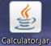
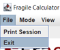
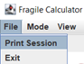
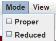
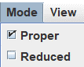
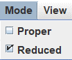
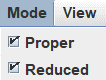
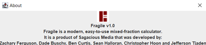

To launch the Fragile Calculator, double click on the FragileCalculator.jar file
To close the calculator, click the X displayed in either the upper left (macOS) or upper right (Windows/Linux).
You can also close the Calculator by clicking on the word ‘File’ in the upper left, and selecting the ‘Exit’ option.
Under the ‘File’ menu option, ‘Print File’ will bring up a print page that allows you to print all of the calculations you have entered.
The ‘Mode’ Option lets you toggle if you want the fractions to appear in ‘Proper’ and/or ‘Reduced’ form..
   
The ‘View’ option brings up a new window that displays the last entered expression as a pie chart, which can be more useful for
visualizing the operations.
The ‘Style’ option allows you to select whether the fraction bar will appear in Bar, Slash, or Solidus style.
The ‘Help’ option has two options: ‘About’ launches a new window displaying product information as well as credits, and ‘Help’ launches a WWW browser and displays these help pages.
The blue sidebar with an arrow can be clicked on, and it expands into a window displaying the history of entered fractions, performed operations, as well as the results of expressions. The history is able to be copy and pasted for more convenience, and it can also be printed for a physical copy.
The Calculator contains a main display window, as well as a selection of buttons for number entry, operations, and more.
The position button [ / ] allows you to cycle between the whole number, numerator, and denominator positions.
The number buttons [0-9], let you enter the corresponding number into the current position.
The Reset button [ R ] clears the entire expression, clearing everything entered.
The Clear button [ C ] clears the current operand only.
The Backspace button [ ← ] clears only the most recently entered part of the fraction
The Sign Button [ ± ] changes the sign of the fraction, alternating between a positive fraction and negative fraction.
The plus [ + ], minus [ - ], multiply [ * ], and divide [ ÷ ] buttons are used after the first operand is entered, and perform their respective operations.
The equals button [ = ] requires two fractions to be entered, as well as an operation. It then computes and displays the result.
The Mediant button [ ⇹ ] is an additional operator button that calculates the mediant of two entered fractions.
The IntegerPower button [ x^n ] is another operator and allows you to enter a fraction, and then raise it to any entered power.
The Simplification button [ ↡ ] helps simplify mixed fractions, converting them into improper fractions.
The Invert button [ Inv ] takes the current fraction and switches the numerator and denominator.
The Calculator also allows the user to use their keyboard to enter data more quickly.
You can use either the Numpad or the row of numbers to type the numbers 0-9 and the result is the same as if you clicked the
corresponding button. This significantly speeds up your ability to enter fractions and saves time.
The four basic operations can also be entered on your physical keyboard, by pressing the corresponding keys: + for addition, - for
subtraction, * for multiplication, and / for division.
The last important key is the decimal or period key. It can be used interchangeably for the position button, allowing you to quickly
switch between the whole number, numerator, or denominator positions.